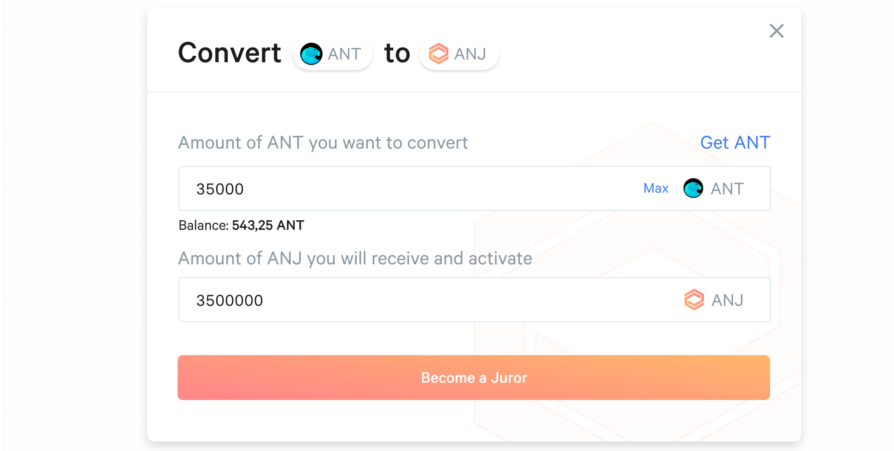

ANJ (Aragon Network Juror) is the native token of the Aragon Court, which jurors need to stake and activate in the Court to be selected and earn dispute fees. The following tutorial will guide you through the steps necessary to get ANJ tokens in order to become an Aragon Court juror.
First, you will need at least 100 ANT tokens (This amount may change depending on the bonding curve). If you already own this amount, you can skip to the next step. Otherwise, you can purchase them on various exchanges like Uniswap, DEX.AG or many others.

To exchange your ANT for ANJ, either go to anj.aragon.org or click on the Buy ANJ button of the Aragon Court Dashboard.
Then simply exchange the ANT amount of your choice for ANJ.
A bonding curve is a mathematical curve that defines a relationship between price and token supply. In this case, the bonding curve is used to convert ANT into ANJ and back. The more ANT is sent to the bonding curve, the fewer new ANJ will be released back to the sender, and vice versa. You can find a technical explanation of bonding curves here and find the source code for the specific smart contract of the ANJ bonding curve here.